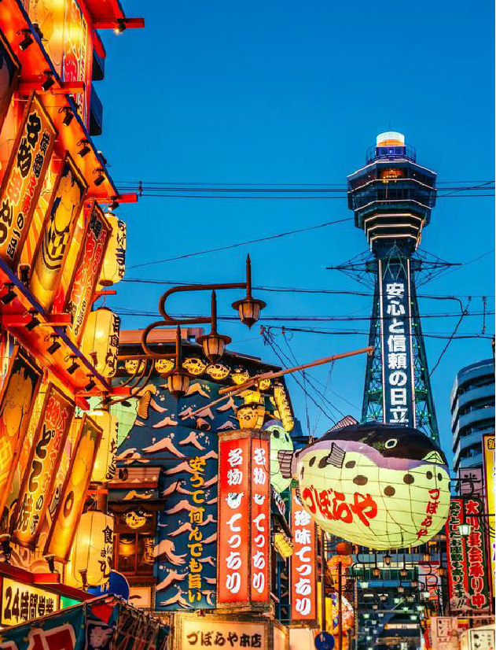

大阪
大阪是一個充滿魅力的悠閒城市，以當地美食、娛樂活動和夜生活而聞名
大阪，一個民風淳樸、民眾坦率的地方。這裡夜生活豐富多彩，美食讓人流連忘返。 除了購物血拼和現代景點外，大阪還有歷史的一面，其中最引人注目的就是大阪城。這座城堡是進一步探尋日本歷史的理想之地，也是在風景優美的街區漫步的好地方，特別是在 4 月賞櫻季，此時櫻花盛開，氣候宜人。


大阪是一個充滿魅力的悠閒城市，以當地美食、娛樂活動和夜生活而聞名
大阪，一個民風淳樸、民眾坦率的地方。這裡夜生活豐富多彩，美食讓人流連忘返。 除了購物血拼和現代景點外，大阪還有歷史的一面，其中最引人注目的就是大阪城。這座城堡是進一步探尋日本歷史的理想之地，也是在風景優美的街區漫步的好地方，特別是在 4 月賞櫻季，此時櫻花盛開，氣候宜人。